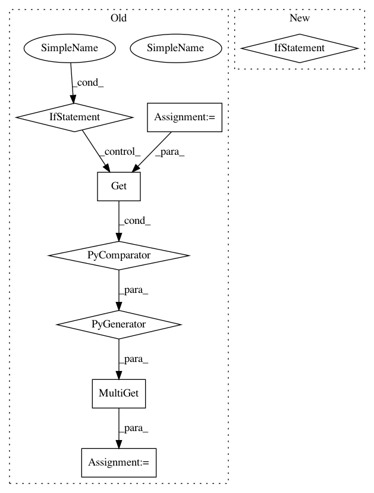

52c7c260e7c0a85e6b051af48b46e8fe9493b117,src/python/pants/core/util_rules/determine_source_files.py,,determine_all_source_files,#Any#,95
Before Change
async def determine_all_source_files(request: AllSourceFilesRequest) -> SourceFiles:
Merge all `Sources` fields into one Snapshot.
if request.strip_source_roots:
stripped_snapshots = await MultiGet(
Get(
SourceRootStrippedSources,
StripSourcesFieldRequest(
sources_field,
for_sources_types=request.for_sources_types,
enable_codegen=request.enable_codegen,
),
)
for sources_field in request.sources_fields
)
digests_to_merge = tuple(
stripped_snapshot.snapshot.digest for stripped_snapshot in stripped_snapshots
)
else:
all_hydrated_sources = await MultiGet(
After Change
)
for hydrated_sources, sources_field in zip(all_hydrated_sources, request.sources_fields):
if isinstance(sources_field, FilesSources):
unrooted_files.update(hydrated_sources.snapshot.files)
digests_to_merge = tuple(
hydrated_sources.snapshot.digest for hydrated_sources in all_hydrated_sources
)
result = await Get(Snapshot, MergeDigests(digests_to_merge))
In pattern: SUPERPATTERN
Frequency: 3
Non-data size: 8
Instances
Project Name: pantsbuild/pants
Commit Name: 52c7c260e7c0a85e6b051af48b46e8fe9493b117
Time: 2020-08-04
Author: benjyw@gmail.com
File Name: src/python/pants/core/util_rules/determine_source_files.py
Class Name:
Method Name: determine_all_source_files
Project Name: pantsbuild/pants
Commit Name: 52c7c260e7c0a85e6b051af48b46e8fe9493b117
Time: 2020-08-04
Author: benjyw@gmail.com
File Name: src/python/pants/core/util_rules/determine_source_files.py
Class Name:
Method Name: determine_specified_source_files
Project Name: pantsbuild/pants
Commit Name: 077673acef5171b8fff8102b92fba0cf6a223393
Time: 2020-10-23
Author: 14852634+Eric-Arellano@users.noreply.github.com
File Name: src/python/pants/backend/python/goals/setup_py.py
Class Name:
Method Name: generate_chroot